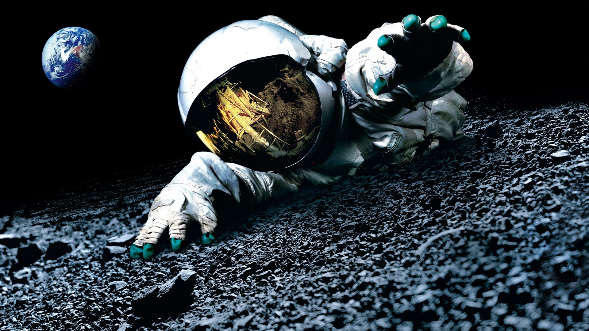

A NASA (National Aeronautics and Space Administration) é a agência espacial dos Estados Unidos. Foi criada em 29 de julho de 1958 com o objetivo de desenvolver pesquisas científicas, explorar o espaço e criar tecnologias para melhorar a vida na Terra.
Em 1969 levou os primeiros astronautas à Lua, um dos maiores feitos da humanidade.
Telescópio espacial responsável por imagens incríveis do Universo desde 1990.
Rover enviado a Marte em 2021 para estudar o planeta e buscar sinais de vida antiga.